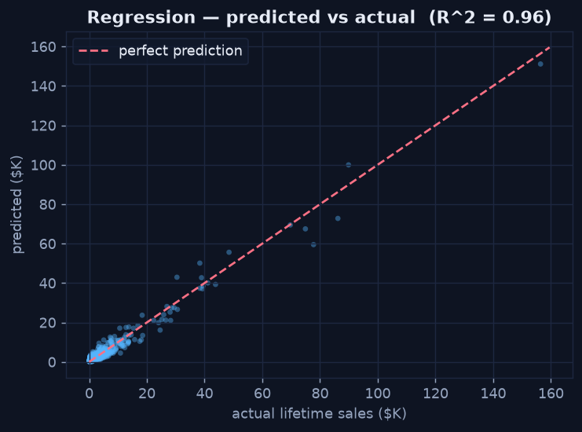
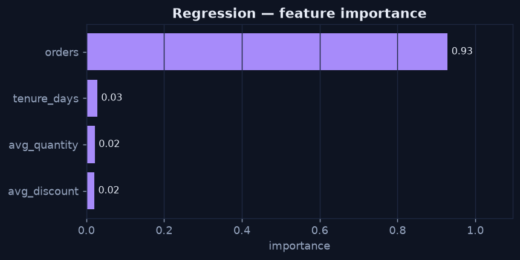

Regression — Predicting a Number
Chapter 3 — A Pipeline End to End
Regression predicts a continuous value. Here the task is to estimate each customer's lifetime sales from their behaviour — how often they order, their average discount, their typical quantity, and how long they've been active. The whole workflow is a few lines of scikit-learn, but the discipline is in how you read the result.
Fit and Score
Python · scikit-learn
from sklearn.ensemble import RandomForestRegressor
from sklearn.metrics import r2_score, mean_absolute_error
features = ["orders", "avg_discount", "avg_quantity", "tenure_days"]
X, y = cust[features], cust["total_sales"]
X_train, X_test, y_train, y_test = train_test_split(X, y, test_size=0.25, random_state=42)
model = RandomForestRegressor(n_estimators=200, random_state=42).fit(X_train, y_train)
pred = model.predict(X_test)
print(f"R^2 = {r2_score(y_test, pred):.2f}") # 0.96
print(f"MAE = {mean_absolute_error(y_test, pred):,.0f}") # ~$1,550On the held-out set this model scores R² ≈ 0.96 with a mean absolute error of about $1,550 — meaning it explains most of the variation in lifetime sales, and its typical miss is around $1,550. The high R² is unsurprising here: order count is a very strong predictor of total spend.
Predicted vs Actual — The Honest Picture
The most useful regression diagnostic is a predicted-vs-actual scatter. Perfect predictions land on the diagonal; the spread around it is the error. This plot shows where the model is reliable and where it drifts — far more informative than a single R² number.

Points hug the diagonal, so predictions track reality well; the spread widens for the largest customers, where data is thinner.
Which Features Drive the Prediction?
A model you can't explain is hard to trust. Feature importance ranks how much each input contributes, turning the model from a black box into an explanation. Here order count dominates — the more a customer orders, the more they spend, which matches intuition and the diagnostic findings.
Python · scikit-learn
importances = pd.Series(model.feature_importances_, index=features)
print(importances.sort_values(ascending=False))
Order count is the dominant driver of predicted lifetime sales — the model's reasoning is legible.
Always Quote a Baseline
An R² or MAE means nothing without context. Compare against the simplest possible model — predicting the average for everyone. If your model's MAE isn't comfortably below that baseline's, the sophistication isn't buying anything. Reporting "R² = 0.96, versus a mean-baseline MAE of X" is honest; reporting "R² = 0.96" alone is salesmanship.